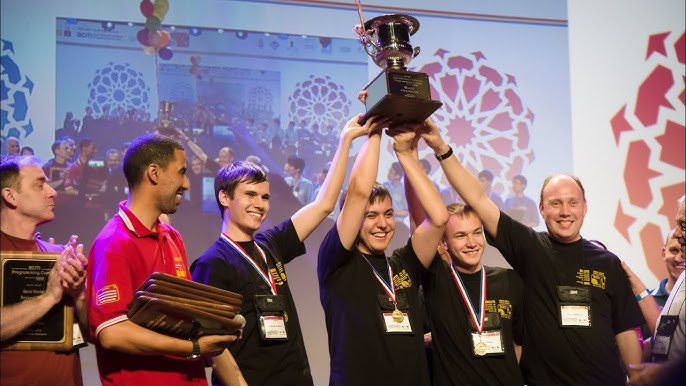
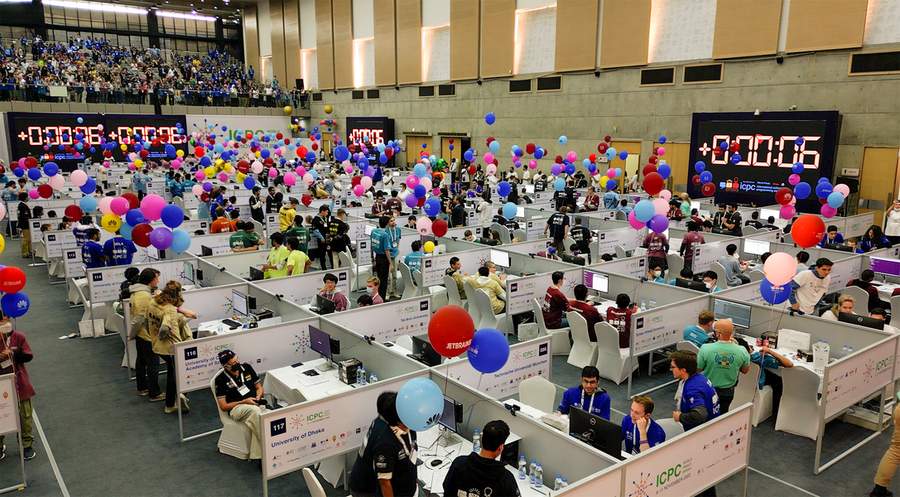

“Competitive programming is not about memorizing algorithms — it is about learning how to think.”
Competitive Programming is one of the most powerful ways to develop problem solving ability, algorithmic thinking, and coding speed. It pushes you to think under pressure, break complex problems into smaller pieces, and implement efficient solutions.
Around the world, thousands of programmers train through platforms like Codeforces, AtCoder, and ICPC contests. Many of today's top engineers at companies like Google, Meta, and OpenAI started their journey through competitive programming.

The International Collegiate Programming Contest (ICPC) is the most prestigious programming competition for university students. Teams from all over the world compete through regional contests for a chance to reach the World Finals.
For CUET students, competitive programming is more than practice — it is an opportunity to represent our university on the global stage. With discipline, teamwork and consistent practice, reaching ICPC World Finals is not just a dream.

Every grandmaster on Codeforces once struggled with two-sum, binary search and recursion. Progress in competitive programming comes from persistence, curiosity and continuous learning.
Whether your goal is ICPC, improving algorithmic thinking, or preparing for top tech companies, competitive programming will sharpen your skills like nothing else.
The journey is long, the problems are hard — but the reward is mastery.